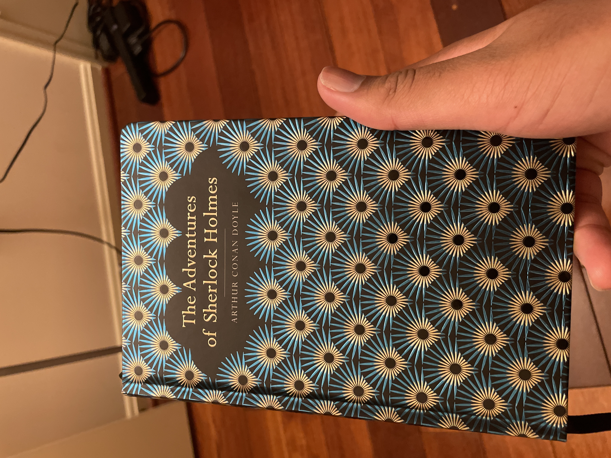

my favorite books!
1. meditations - marcus aurelius
One of my favorite books I've read has to be Meditations by Marcus Aurelius. This book is essentially a journal that contained Stoic ideas from Aurelius hismelf. To me, this book is a very good introduction to anyone that wants to break into Stoic philosophy, as it's a relatively easy read without an absurd amount of jargon. Below are a few quotes I found to be the most profound from this book!
![Two of my favorite quotes from Meditations\n1) Do external things distract you? Then make time for yourself to learn something worthwhile; stop letting yourself be pulled in all directions. But make sure you guard against the other kind of confusion. People who labor all their lives but have no purpose to direct every thought and impulse are wasting their time - even when hard at work.\n2) Ignoring what goes on in other people's souls - no one ever came to grief that way. But if you won't keep track of what your own soul's doing, how can you not be unhappy?](.././assets/images/IMG_5327.JPG)
2. the lord of the rings trilogy - jrr tolkien
This is probably up there with my favorite fiction series of all time. The Lord of the Rings is about a character who gets gifted a ring that can make the bearer invisible. The catch is that the ring also has the capability to corrupt the bearer with evil, so the main character and his friends seek out to destroy the ring at the Cracks of Doom, the only place that can destroy it. It's a great adventure from book 1 to 3, and I highly recommend it to any book enjoyer of any age!
3. the adventures of sherlock holmes - sir arthur conan doyle
The Adventures of Sherlock Holmes is a collection of around 10 short stories about the iconic detective Sherlock Holmes and his adventures in cracking the toughest criminal cases. With his ingenious tactics, him cracking various criminal cases makes this book a fun, thrilling and entertaining read, and I highly recommend it to anyone that wants a short, nice read.